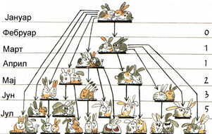
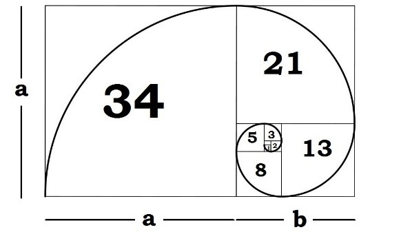

Леонардо Фибоначи
Математичар који је променио Европу

Леонардо из Пизе, познатији као Фибоначи, био је италијански математичар из 13. века. Најпознатији је по увођењу арапских бројева у Европу и по низу који данас носи његово име.
Шта је Фибоначијев низ?
Фибоначијев низ је бесконачан низ бројева у коме је сваки наредни члан једнак збиру претходна два. Низ почиње бројевима 0 и 1:
0, 1, 1, 2, 3, 5, 8, 13, 21, 34, 55, ...
Математички, низ се дефинише формулом:
Fn = Fn−1 + Fn−2
Иако је правило веома једноставно, последице овог низа су изузетно дубоке и појављују се у бројним областима математике и науке.
У свом делу Liber Abaci (1202) представио је практичне методе рачунања које су биле револуционарне за трговину, банкарство и науку.
Фибоначи калкулатор
Укуцајте број n да видите n-ти Фибоначијев број:
Како је настао Фибоначијев низ?
Проблем је гласио: ако један пар зечева сваког месеца добија нови пар, колико ће парова бити након одређеног броја месеци? Решење овог проблема довело је до низа у коме је сваки број збир претходна два, данас познатог као Фибоначијев низ.
Фибоначијев низ и златни пресек
Једна од најзанимљивијих особина Фибоначијевог низа јесте његова веза са златним пресеком. Однос два узастопна члана низа све више се приближава броју φ (фи),
\[\varphi = \frac{1 + \sqrt{5}}{2} = 1.6180339887...\]Златни пресек се сматра естетски најпријатнијим односом и вековима се користи у уметности, архитектури и дизајну.
Фибоначијева спирала
Фибоначијева спирала је визуелни приказ низа у природи и уметности. Свако наредно поље у спирали има димензије које одговарају члановима Фибоначијевог низа, што резултује естетски пријатним закривљеним обликом. Ова спирала се често примењује у архитектури, дизајну и анализи природних облика као што су шкољке, цвеће и галаксије.
Фибоначијев низ око нас
Фибоначијев низ се не јавља само у природи, већ и у нашем окружењу. Ево неких области у којима га можемо уочити:
- Архитектура: Партенон, Аја Софија, Нотр Дам
- Уметност: Мона Лиза, Последња вечера, Нојферт
- Музика: Страдивариусова виолина
Примена у информатици
У информатици, Фибоначијев низ се користи за анализу алгоритама, рекурзију и оптимизацију. Познати су Фибоначијеви алгоритми претраге и структуре података засноване на овом низу.
Због своје једноставне дефиниције, низ је често први пример који се користи за објашњавање рекурзивних функција у програмирању.
Зашто је Фибоначи важан?
Фибоначи није само математичар који је описао један низ. Он је човек који је променио начин на који Европа рачуна, размишља и развија науку.
Његов рад представља мост између античког знања и модерне математике, а Фибоначијев низ и данас инспирише научнике, уметнике и програмере широм света.